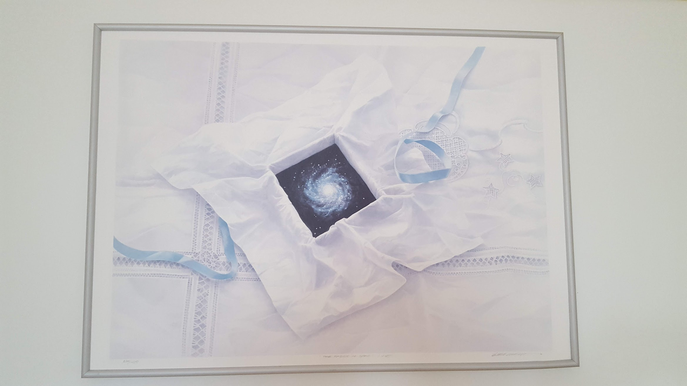

A collection of short essays about how scientific theories are built, used, and sometimes protected;
about curiosity versus incentives; and about what it means to do research honestly in a competitive system.

Science is a gift.
Index
Browse by topic using the sections above, or start from: